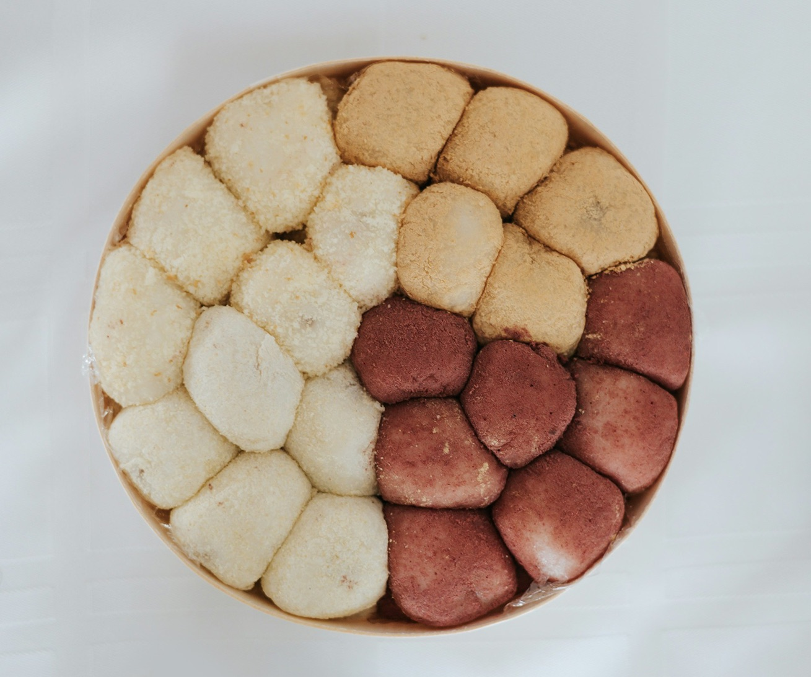
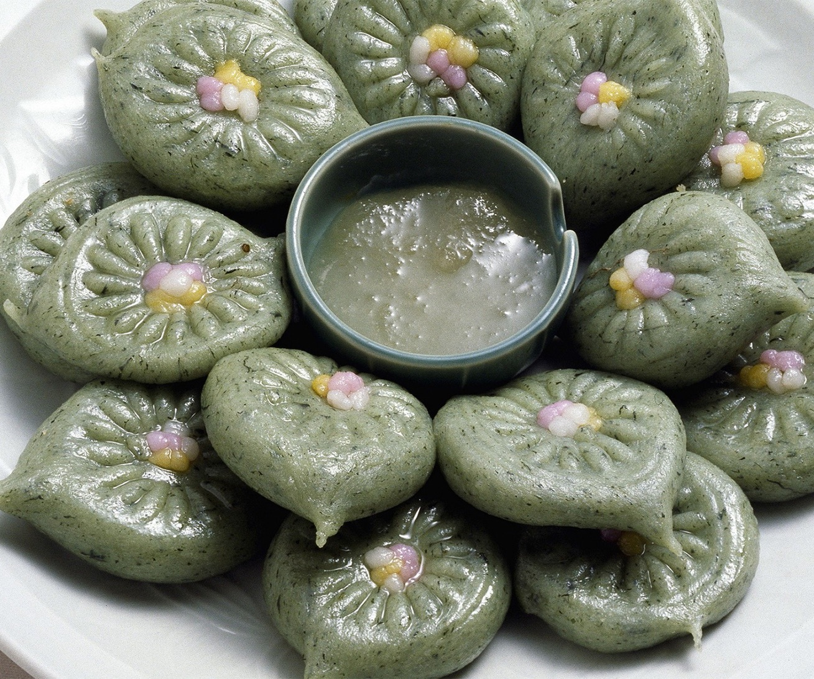
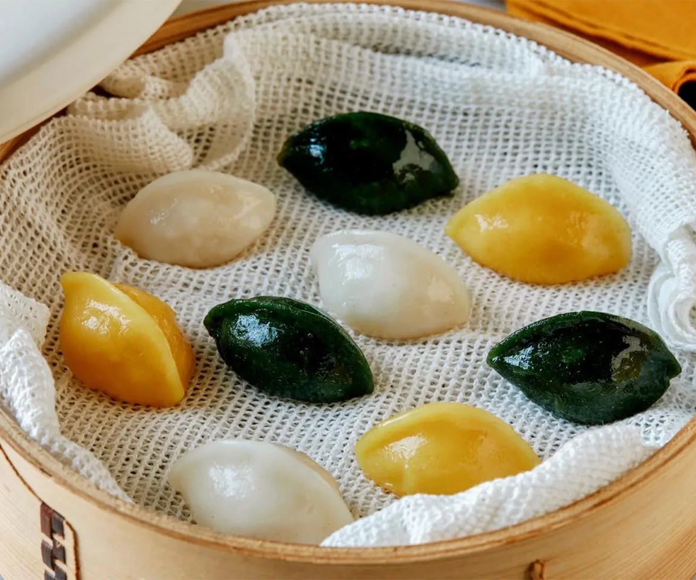
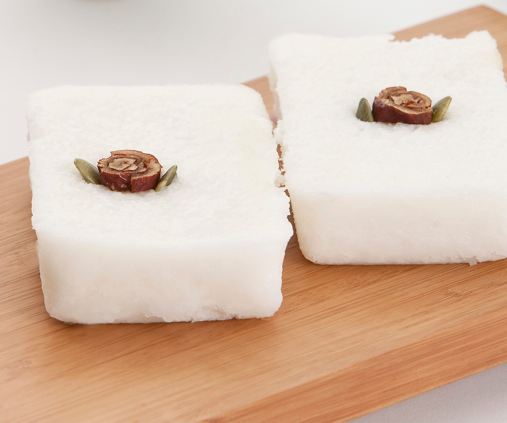
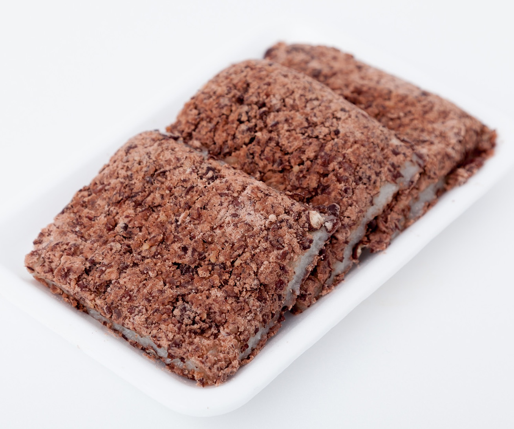
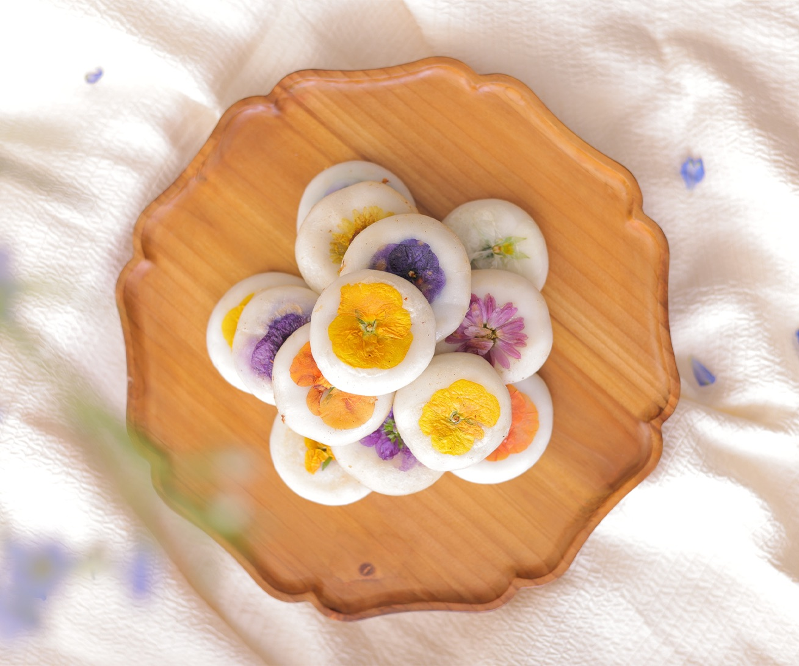
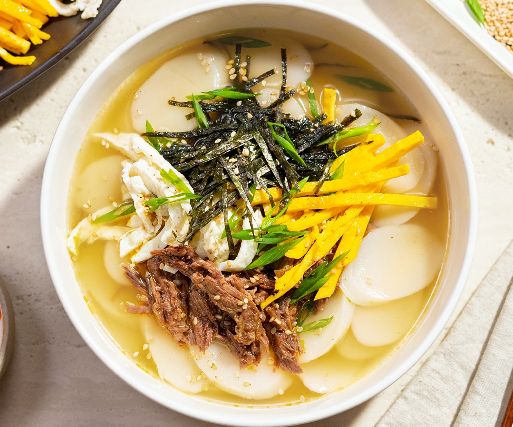
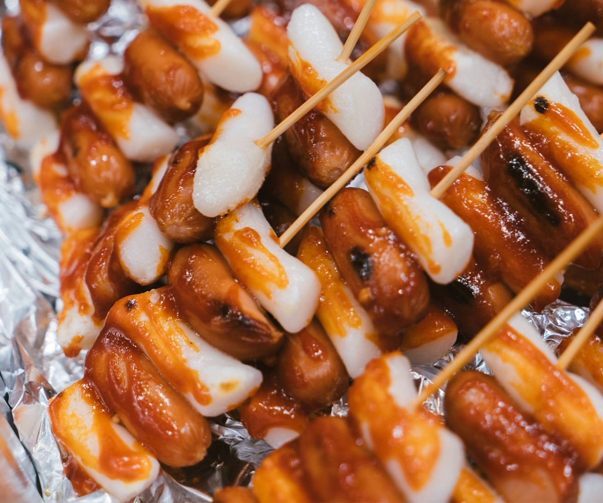
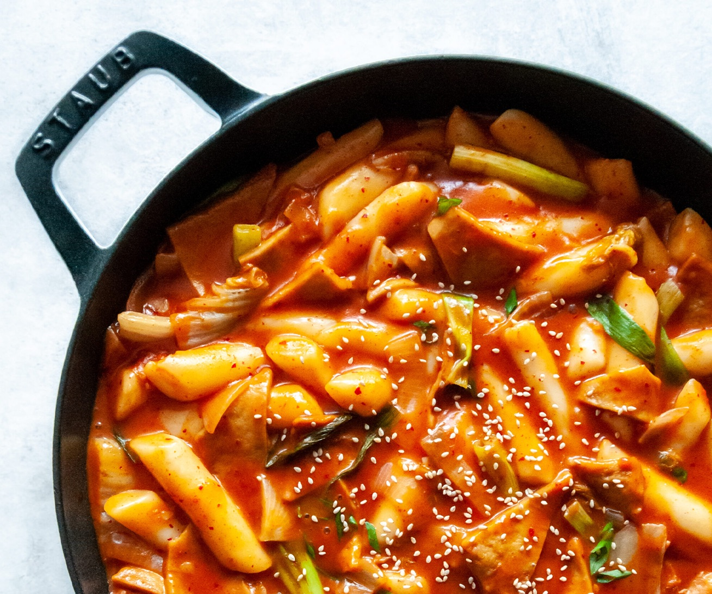

Injeolmi Tteok: Soft chewy rice cake coated in roasted soybean powder for a nutty flavor.

Jeolpyeon Tteok: Pattern pressed rice cakes often flavored and colored with natural ingredients.

Songpyeon Tteok: Half moon shaped rice cakes filled with sweet fillings traditionally enjoyed during Chuseok.

Baekseolgi Tteok: Steamed white rice cake symbolizing purity and celebration in special ceremonies.

Siru Tteok: Layered rice cake steamed in a siru (earthenware steamer) with beans.

Hwageon Tteok: Delicate rice cakes decorated with edible flowers often served at spring celebrations.

Tteokguk: Sliced rice cake soup enjoyed during Lunar New Year for good luck and a fresh start.

Sotteok Sotteok: Skewers of rice cakes and sausages brushed with sweet spicy sauce.

Tteokboki: Stir fried rice cakes in a bold spicy gochujang based sauce.